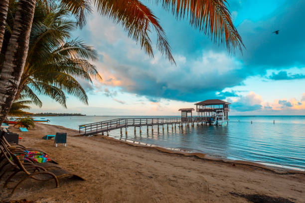

Bienvenido a Conoce tu Tierra
Conoce tu Tierra es una plataforma que te permite descubrir los destinos más hermosos y culturales de tu región. Explora rutas, conoce la cultura local y realiza reservaciones para tus próximas aventuras.
Explorar DestinosDestinos Destacados
Honduras, cinco estrellas que brillan con orgullo
Descubre la belleza, cultura, historia y naturaleza, que hacen de Honduras un lugar unico.
Datos de Honduras
Descubre interesantes datos sobre Honduras, su cultura, historia y geografía.
- Capital: Tegucigalpa
- Idioma oficial: Español
- Moneda: Lempira (HNL)
- Población: Aproximadamente 9.5 millones de habitantes
- Superficie: 112,492 km²
- Clima: Tropical en la costa y templado en las montañas
- Principales atractivos turísticos: Ruinas de Copán, Islas de la Bahía, Parque Nacional Cusuco, Lago de Yojoa, entre otros.
- Festividades: Feria Juniana, Semana Santa, Día de la Independencia, entre otras.
- Gastronomía: Baleadas, tamales, sopa de caracol, yuca frita, entre otros platos típicos.
- Deportes populares: Fútbol, béisbol y baloncesto.
- Patrimonio cultural: La cultura garífuna, la música punta y la danza tradicional.
- Flora y fauna: Honduras cuenta con una gran diversidad de especies de plantas y animales, incluyendo jaguares, monos aulladores y aves exóticas.
¿Quieres saber más sobre Honduras?
¡Contáctanos para obtener más información sobre los destinos turísticos y la cultura hondureña!
conocetutierra@honduras.com
Teléfono: +504 1234-5678